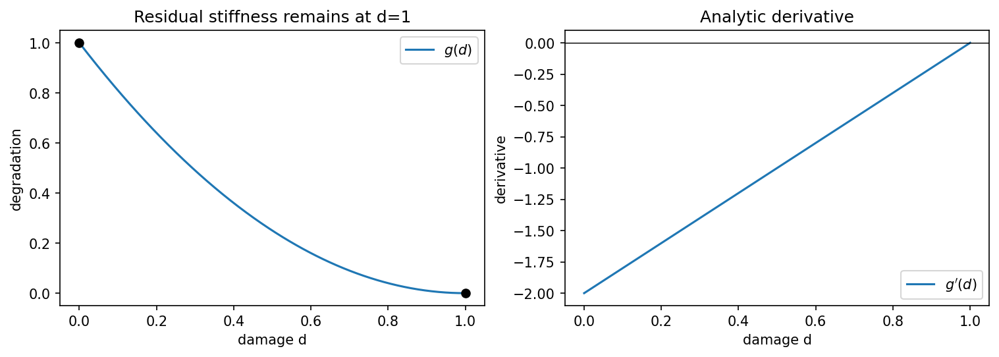

Lab 02: Differentiating Degradation: Analytical, Autograd, & Finite Differences#
Learning Objective: Implement a quadratic degradation function in PyTorch, compute its derivative using analytical calculus, automatic differentiation (torch.autograd), and central finite differences, and explore the numerical precision properties of gradient evaluation.
In phase-field fracture, the material stiffness degrades as damage increases. The standard quadratic degradation function is:
where \(\eta_{\mathrm{res}} \ll 1\) is a small residual stiffness parameter that ensures numerical stability when damage reaches \(d = 1\).
In this tutorial, we evaluate \(g_\eta(d)\) and its sensitivity \(g'_\eta(d)\) using three distinct methods:
Analytical Differentiation: Explicit mathematical evaluation of \(g'_\eta(d) = -2(1-\eta_{\mathrm{res}})(1-d)\).
Automatic Differentiation: Reverse-mode autograd via PyTorch (
loss.backward()).Numerical Differentiation: Central finite differences with step size \(h\).
{'course_layout': 'teaching/ukacm_autumn_school_2026 located', 'torch': '2.8.0', 'device': 'cpu', 'dtype': 'torch.float64'}
from day2_helpers import import_public_phast
phast_info = import_public_phast()
from phast.physics.material import Material
eta = 1.0e-7
material = Material(E=1.0, nu=0.3, Gc=1.0, l0=0.1, rho=1.0, eta_residual=eta)
def g_analytic(d):
return (1.0 - eta) * (1.0 - d) ** 2 + eta
def gp_analytic(d):
return -2.0 * (1.0 - eta) * (1.0 - d)
d = torch.tensor(0.25, dtype=torch.float64, requires_grad=True)
g_phast = material.degradation(d)
(g_ad,) = torch.autograd.grad(g_phast, d)
h = 1.0e-6
g_fd = (g_analytic(d.detach() + h) - g_analytic(d.detach() - h)) / (2.0 * h)
expected = gp_analytic(d.detach())
print({
"public_source": phast_info,
"d": float(d.detach()),
"g_from_public_material": float(g_phast.detach()),
"analytic_g_prime": float(expected),
"autograd_g_prime": float(g_ad),
"central_fd_g_prime": float(g_fd),
})
{'public_source': {'source': 'vendor/PhAST/src (manifest-verified when vendored)', 'module_file': 'phast/__init__.py', 'revision': 'f6324f899f0701769810be117f27f1208f7a582e', 'version': '0.16.2', 'import_route': 'PYTHONPATH=<public-PhAST>/src', 'verification': 'COURSE_SOURCE_MANIFEST.json hashes verified'}, 'd': 0.25, 'g_from_public_material': 0.56250004375, 'analytic_g_prime': -1.49999985, 'autograd_g_prime': -1.49999985, 'central_fd_g_prime': -1.4999998499964917}
endpoints = material.degradation(torch.tensor([0.0, 1.0], dtype=torch.float64))
ad_error = abs(float(g_ad - expected))
fd_error = abs(float(g_fd - expected))
assert abs(float(endpoints[0]) - 1.0) < 1.0e-12
assert abs(float(endpoints[1]) - eta) < 1.0e-12
assert ad_error < 1.0e-12
assert fd_error < 1.0e-8
print({"g(0)": float(endpoints[0]), "g(1)": float(endpoints[1]), "AD_error": ad_error, "FD_error": fd_error})
{'g(0)': 1.0, 'g(1)': 1e-07, 'AD_error': 0.0, 'FD_error': 3.5083047578154947e-12}
d_plot = torch.linspace(0.0, 1.0, 400, dtype=torch.float64)
fig, axes = plt.subplots(1, 2, figsize=(10, 3.5), constrained_layout=True)
axes[0].plot(d_plot, material.degradation(d_plot), label=r"$g(d)$")
axes[0].scatter([0, 1], endpoints, color="black", zorder=3)
axes[0].set(xlabel="damage d", ylabel="degradation", title="Residual stiffness remains at d=1")
axes[0].legend()
axes[1].plot(d_plot, gp_analytic(d_plot), label=r"$g'(d)$")
axes[1].axhline(0, color="black", lw=0.7)
axes[1].set(xlabel="damage d", ylabel="derivative", title="Analytic derivative")
axes[1].legend()
fig.savefig(assets_dir() / "degradation_autograd.png", dpi=160, bbox_inches="tight")
display_figure(fig, alt="Standard degradation function and its analytic derivative over damage from zero to one.")
plt.close(fig)

Why this matters. Automatic differentiation follows the tensor operations connected to a scalar loss. For a complete solver, trace that connection through the boundary conditions, equilibrium solve, history update and active constraints. The next exercise develops this parameter-to-observation chain for an elastic bar.
Exercises#
Try each question before opening the hint or worked solution. Keep the original calculation as your reference.
Exercise 1: Evaluate the law, its slope, and its curvature#
For
compute \(g(0)\), \(g(1)\), \(g(0.25)\), \(g'(0.25)\), and \(g''(d)\). State whether \(g\) is decreasing and whether it is convex on \(0\le d\le1\).
Hint 1
Differentiate the square before substituting numbers: \(g'(d)=-2(1-\eta)(1-d)\).
Worked solution 1
First,
At the endpoints,
so a small residual stiffness remains in the broken state. At \(d=0.25\),
and
Finally, \(g''=1.9999998>0\), so the law is convex. For \(d<1\), \(g'(d)<0\), hence it is decreasing over the intact-to-broken interval. These values match the notebook output.
Exercise 2: Understanding Finite-Difference Accuracy and Truncation Error#
The central finite-difference approximation is defined by:
\[ g'_{\mathrm{FD}}(d) = \frac{g(d + h) - g(d - h)}{2h}. \]Using a Taylor expansion of \(g(d+h)\) and \(g(d-h)\), show that the truncation error of this estimator scales as \(\mathcal{O}(h^2)\).Why does choosing an excessively small perturbation step size (e.g. \(h = 10^{-16}\)) degrade accuracy when using standard 64-bit floating-point arithmetic?
In scientific computing, why is reverse-mode automatic differentiation preferred over finite differences for computing gradients with respect to millions of parameter values?
Hint 2
The finite difference perturbs only the scalar \(d\) in the smooth material law. Follow the computational graph only as far as the scalar function actually evaluated.
Worked solution 2
Truncation Error Analysis: Expanding \(g(d \pm h)\) in a Taylor series about \(d\):
\[ g(d + h) = g(d) + h g'(d) + \frac{h^2}{2} g''(d) + \frac{h^3}{6} g'''(d) + \mathcal{O}(h^4), \]\[ g(d - h) = g(d) - h g'(d) + \frac{h^2}{2} g''(d) - \frac{h^3}{6} g'''(d) + \mathcal{O}(h^4). \]Subtracting the two series cancels all even-order powers of \(h\):\[ \frac{g(d+h) - g(d-h)}{2h} = g'(d) + \frac{h^2}{6} g'''(d) + \mathcal{O}(h^4). \]Thus, the leading error term is proportional to \(h^2\), confirming that the central difference is second-order accurate.Step Size and Numerical Cancellation: In finite-precision floating-point arithmetic, when \(h\) is extremely small (approaching machine precision \(\epsilon_{\mathrm{mach}} \approx 10^{-16}\) for double precision), the terms \(g(d+h)\) and \(g(d-h)\) share nearly identical high-order bits. Subtracting them causes catastrophic cancellation (loss of significant digits). The total numerical error is the sum of truncation error \(\mathcal{O}(h^2)\) and roundoff error \(\mathcal{O}(\epsilon_{\mathrm{mach}} / h)\), leading to an optimal step size around \(h \approx \sqrt[3]{\epsilon_{\mathrm{mach}}} \approx 10^{-5}\) to \(10^{-6}\).
Computational Efficiency of Autograd: To compute the gradient of a scalar loss with respect to \(P\) parameters via finite differences requires \(2P\) evaluations of the entire forward simulation. In contrast, reverse-mode automatic differentiation evaluates the exact gradient with respect to all \(P\) parameters in a single backward pass, requiring a computational cost comparable to just \(2\) to \(3\) forward evaluations, regardless of \(P\).